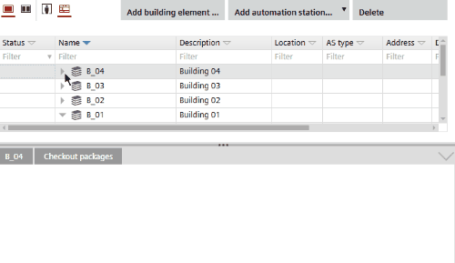

将触摸面板分配给操作和监控设备
InBuilding > Details pane > Automation station details > Touch panel assignment，您可以将触摸面板分配给操作和监视设备，例如PXG3.W100-2。
Details pane of the device version ≤ 1.5
为了将触摸面板分配给操作和监控设备，操作和监控设备必须具有网络服务器功能，例如PXG3.W100-2。

Assign touch panel
- Open Building > Building structure.
- Select an operating and monitoring e.g. PXG3.W100-2.
- In the Details pane, open the Touch panel assignment tab.
- In the Assigned column, select the touch panels that you want to assign to the operating and monitoring device.